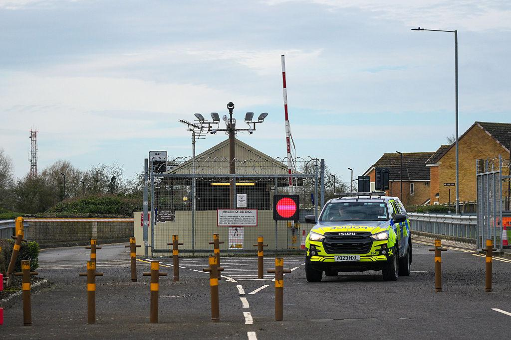

01｜
英国费尔福德空军基地附近拦截可疑车辆，五人因涉嫌预谋恐怖行为被捕
据路透社报道，英国警方接到报告称，三辆可疑车辆当地时间凌晨0点45分左右正驶向格洛斯特郡费尔福德空军基地，武装警员随即出动，在附近韦尔福德村逮捕五名男子；五人最初因涉嫌违反《爆炸物法》被捕，随后进一步以涉嫌预谋恐怖行为被拘留，反恐警察目前主导此案调查。英国反恐警务全国协调员埃文斯表示，“调查目前处于早期阶段，五名男子仍被拘留”。费尔福德空军基地由美军使用，此前英国政府已授权美方从该基地起飞，对袭击霍尔木兹海峡航运的伊朗导弹阵地发动打击；伊朗革命卫队此前已将该基地列为“合法打击目标”。
来源｜路透社

图｜英国警方封锁费尔福德空军基地附近道路。图片来源｜Reuters观察｜
警方已经把调查方向从单纯的爆炸物罪名升级为预谋恐怖行为，但尚未公布逮捕动机或嫌疑人背景，更没有确认与伊朗存在关联。在伊朗此前公开威胁的背景下，外界很容易提前把这起事件和报复行动挂钩，但目前唯一确认的事实是警方已按恐怖主义方向调查、五人仍被拘留。对企业和机构而言，真正需要跟踪的是调查后续是否会公布具体动机，这将决定英国是否会进一步收紧对美军基地及周边设施的安保措施。
02｜
拉夫罗夫在联大指责欧洲全力阻挠乌克兰和谈
俄罗斯外长拉夫罗夫周六在联合国大会演讲中指责欧洲国家“竭尽全力阻挠”俄乌和谈前景，称西方“用武器武装乌克兰”并协助其用无人机和导弹打击平民及民用基础设施，“西方渴望给俄罗斯造成战略性失败，但这些企图只会让挑起战争者陷入战略死胡同”。
来源｜安纳多卢通讯社
观察｜
把“和谈受阻”的责任完全归于欧洲，这是俄方在联大讲台上的单方归因，而不是对当前僵局的中立描述。对企业而言，真正需要跟踪的不是各方在联大讲台上互相指责的措辞，而是俄乌双方是否有任何一方在未来几周内提出可核实的具体谈判条件。
03｜
古巴外长联大表态“不是威胁”，愿与美方对话
古巴外长罗德里格斯周六在联合国大会表示，古巴对美国不构成威胁，愿意在主权平等和尊重国际法的基础上与华盛顿开展对话，称“古巴不是威胁，封锁才是威胁”，古巴准备像对待其他国家一样，与美方开展贸易、商业关系及合作，不附加任何前提条件。
来源｜安纳多卢通讯社
观察｜
“不附加任何前提条件”这句表态释放的信号，比“愿意对话”本身更值得记住——这意味着古巴目前的立场是主动放低谈判门槛，而不是坚持解除制裁作为对话前提。对有意进入古巴市场的企业而言，真正需要跟踪的是华盛顿是否会对这一表态作出正式回应，而不是把这次演讲当作两国关系已经改善的信号。
04｜
中国国家副主席韩正联大表态反对“单边军事行动”，回应美伊战争
中国国家副主席韩正周六在联合国大会发言中表示，反对绕过安理会授权、违反《联合国宪章》的“单边军事行动”，其表态被视为间接回应当前持续的美伊战争。
来源｜安纳多卢通讯社
观察｜
“反对单边军事行动”这类表态历来是中国在联合国场合的一贯立场，本身不构成新的政策转向，但选择在美伊战争持续升级、伊朗提出谈判方案又遭特朗普拒绝的这个时间点重申，说明北京希望在这场冲突的外交叙事中保持存在感。对企业而言，真正需要跟踪的是这类表态之外，中国是否会在能源采购、对伊贸易或联合国安理会层面采取任何具体的配合行动。


评论
你今天最关注哪一条？